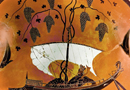
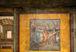

Dionysus
Bacchus, his Roman name, is in particular still frequently associated with wine and alcohol. In fact, Dionysus was something much more than a wine god to the Greeks, although this is often forgotten today. It is attractive for a modern audience to think of a god of wine, to name wine shops Bacchus, and to think of an entirely innocent association with celebration. But Dionysus was in the Greek and Roman worlds connected profoundly with the Greek psyche in a much deeper sense than as a god of celebration. E. R. Dodds, a famous Oxford scholar of Greek literature and culture, offers what I think is a powerful yet concise description of what Dionysus was all about for the Greeks:
‘He is the power in the tree; he is the blossom-bringer, the fruit-bringer, the abundance of life. His domain is, in Plutarch's words, the whole of the liquid nature - not only the liquid fire in the grape, but the sap thrusting in a young tree, the blood pounding in the veins of a young animal, all the mysterious and uncontrollable tides that ebb and flow in the life of nature.’
I will come back to this later. For the moment, let’s look more at the development of Dionysus in Greece. Dionysus is, as one of the 12 Olympian gods, a relative late-comer to Greece. He does not appear prominently in Homer, and is more associated with later lyric poetry and the performance of comedy and drama in 5th-century Athens. Dionysus is traditionally the son of Zeus and Semele, the daughter of king Cadmus in Thebes. Zeus falls in love with Semele and takes a mortal form to have an affair with her. Of course, Hera becomes jealous. She decides to punish Semele by convincing her to ask Zeus to show himself to her in his true divine form. This turns out to be a deadly request for Semele, because Zeus’ true divine form combines light and the fire of his lightning (remember Zeus’ connection with such phenomena as a weather god). Zeus does not want to reveal his true form to Semele but he is forced to do so because Semele makes him promise that he will grant to her whatever she asks for. When he reveals himself to her, she is instantly incinerated.
Her child Dionysus, however, does not die because of his immortality. Zeus snatches him up from the ashes of his mother, sews him into his thigh, from which Dionysus is later born a second time. It is often said that nymphs raised him. The 26th Homeric Hymn says the following about the god:
‘With the god who has ivy hair, Dionysos who roars out loud, The splendid son of Zeus whom glorious Semele bore, I begin to sing. He was reared by nymphs show tresses are fair: From the lord his father they took to their bosom and fostered with care this child in the hollows of Nysa. He grew through his father’s will – being reckoned amongst the immortals – within a fragrant cave. When the goddesses finished his rearing, this god much honoured in hymns through the wooded glens went wandering, covered with ivy and bay. Behind him followed the nymphs, in front he was leading the way, And, stretched out far beyond telling, the forest rang with his roar. And so to you farewell, Dionysus rich in grapes.’
In other versions of the story of Dionysus birth, it is Hermes who rescues Dionysus from the ashes of Semele, and her sister Ino is often the one who is said to have looked after the god when he was a baby.
I said above in quoting E.R. Dodds that Dionysus is a god connected with life-force. He, through his connection with wine, represents the blood flowing through our veins and the deepest roots of our animal nature. Dionysus is a male fertility god of crops, who makes vegetation grow and, like Demeter, has connections to death and to the underworld. All of these characteristics are very well displayed in the myth of his encounter with pirates in the 7th Homeric Hymn (see M&L 323-5). In this poem, pirates, who do not suspect that he is a god, abduct Dionysus (pirates are famous in classical mythology for abducting people). Only the helmsman is aware of the fact that Dionysus is a god, and tries to convince his comrades to let the god go. The pirates do not, of course, listen and set themselves up for a great fall. Dionysus at first sits on the ship smiling, until he unleashes a series of punishments on the ship, in what is one of the most vibrant images in all of classical literature:
‘Soon before them miraculous works appeared. Wine at first began along the swift, black ship to gurgle, sweet to the taste and fragrant-the scent that rose up was divine- and all the sailors were seized with awe at the sight. But at once on either side along the topmost edge of the sail a vine was stretched out, and grapes were hanging down In clusters; dark-green ivy twined about the mast, bursting with bloom; upon it delightful berries stirred, and all the tholes were wearing garlands. The men, when they saw, then indeed kept bidding the helmsman to steer the ship toward shore; but the god within their ship became at the prow a fearsome lion, roaring loud, and amidships made a bear with shaggy-maned neck, revealing his portents to view. It reared up fiercely, the lion upon the upper deck, shooting a fearsome glare; the men fled back to the stern, and on every side of the helmsman who had a prudent heart they stood in terror. The god with a sudden rush forward seized the captain; the men, as they tried to escape from an evil doom, all together plunged, when they saw, in the brilliant sea, and in to Dolphins turned. But holding the helmsman back in pity, he made him in all ways blessed, and spoke these words: “Take courage, noble father, you who have pleased my heart. “I am Dionysos who roars out loud, and was given birth by Semele, Kadmos’ child, who was joined in love with Zeus”’.
Here we see the well-known connection of Dionysus with wine and vines (his hair is often said to be ivy), but also a more destructive side of the god, who is deeply connected with the animal world. He rewards the helmsman because he follows him, whereas he punishes the other pirates because they doubt who he is. He is also here responsible for metamorphoses into beasts; he takes the form of a lion himself, and turns all of the pirates into Dolphins. (see image 1)
For the Greeks, Dionysiac ritual involved a deep religious experience which allowed one to tap into a certain aspect of oneself which was not accessible at other times. Now, the Greeks, as is common in different cultures throughout the world, did think that the intoxication of wine was an aid to this religious experience. Wine can perhaps allow us to tap into aspects of our inner selves that we do not at other times explore. Remember, however, that wine is not a necessary part of the Dionysiac experience; the maenads, the female celebrants of Bacchus, are said in the sources to drink not always wine, but water or even milk. His followers dance, revel in music, and enter states of ecstasy (cf. M&L 320–3). Dionysus is also very much connected to the art of drama in Athens. The major festival at which drama (tragedy, comedy and satyr plays) was performed in Athens, the City Dionysia, was not just a theatrical festival, but, as the name might suggest, a religious festival of the god Dionysus. The City Dionysia lasted from four to five days and was undoubtedly a time of great drinking, eating and celebration in the city. Things got underway at the festival with a procession to the ancient temple of Dionysus which sits under the acropolis, where sacrifices were made to the god. It is important to keep in mind that this was at its centre a religious festival for the Athenians, and that for this reason it is impossible for us to separate Greek tragic performances from the religious sphere. This may seem strange to us as a modern audience, where we do not on the whole equate role playing and theatre with religion, but this was undoubtedly the case for the Greeks; one might remember perhaps that it is a group of goddesses, the Muses, who reigned over and inspired the realm of poetry for the Greeks; Homer begins his Odyssey with ‘Muse, tell me of the wanderings of crafty Odysseus’, calling upon the divine Muse as his inspiration; similarly the god Dionysus could be intimately associated with drama.
{kind=link}
As we saw above, Dionysus can be a destructive god. This quality is no more apparent than in the myth of his visit to Thebes, where he encounters Cadmus, the father of Semele (Dionysus’ mother), and Pentheus, the grand-son of Cadmus. This myth is recounted famously in Euripides’ Bacchae.When Dionysus arrives at Thebes in the play, he is angry with the city because Pentheus does not believe that Semele actually had an affair with Zeus, nor that Dionysus is a god who should truly be worshipped. For this lack of belief, the sisters of Semele and Pentheus will pay a great price, whereas Cadmus and Tiresias, who believe in Dionysus, come out of the affair unscathed. Dionysus arrives and makes all of the women go crazy with his intoxication; they go to the mountains to dance and celebrate the god. Pentheus at first tries to capture Dionysus, who is disguised as a priest of Dionysus, and locks him up. But the god escapes from his prison miraculously, by causing an earthquake. Upon his escape, Dionysus convinces Pentheus to dress up like a female celebrant, in order to sneak into the hills to see what his mother Agave and the other sisters of Semele are doing. Pentheus at first wants to launch a military assault on the women who were celebrating Dionysus, but Dionysus instead invokes in him curiosity for sex and the female orgies which are taking place on the mountain. Pentheus becomes delirious and agrees to do as Dionysus suggests.
When Pentheus dresses up and goes into the mountains, the women, in their Bacchic frenzy, think that he is beast and tear him apart. He is torn to pieces by his own mother Agave, in what is one of the most grotesque scenes in Greek tragedy:
‘“O mother! it is I, thy own son Pentheus, the child thou didst bear in Echion's halls; have pity on me, mother dear! oh! do not for any sin of mine slay thy own son.”
But she, the while, with foaming mouth and wildly rolling eyes, bereft of reason as she was, heeded him not; for the god possessed her. And she caught his left hand in her grip, and planting her foot upon her victim's trunk she tore the shoulder from its socket, not of her own strength, but the god made it an easy task to her hands; and Ino set to work upon tåhe other side, rending the flesh with Autonoe and all the eager host of Bacchanals; and one united cry arose, the victim's groans while yet he breathed, and their triumphant shouts. One would make an arm her prey, another a foot with the sandal on it; and his ribs were stripped of flesh by their rending nails; and each one with blood-dabbled hands was tossing Pentheus' limbs about. Scattered lies his corpse, part beneath the rugged rocks, and part amid the deep dark woods, no easy task to find; but his poor head hath his mother made her own, and fixing it upon the point of a thyrsus, as it had been a mountain lion's, she bears it through the midst of Cithaeron, having left her sisters with the Maenads at their rites. And she is entering these walls exulting in her hunting fraught with woe, calling on the Bacchic god her fellow-hunter who had helped her to triumph in a chase, where her only prize was tears.’ (see image 2)
{kind=link}
This terrible description of the frenzy of the women in the Bacchae can be connected to what, in some form at least, was a part of Dionysiac ritual: omofagia (ὠμοφαγία) or 'the eating of raw flesh'. It is mentioned in the record of Dionysiac rite in several cities in Greece, and it is attested by later historians. In the Bacchae the women first rip apart the cattle of Thebes and eat them, and then later they rip apart Pentheus. Why was flesh eaten raw? There was a sense of the transferring of power by the eating of raw flesh and blood. One can in fact think of modern parallels; for example eating part of a bull which has been killed in the Spanish bullfights, has often been considered to impart particular power.
How do we connect the pleasurable and celebratory aspects of Dionysus, the god of wine, with the more sinister aspects of his character noted above? Ultimately, Dionysus must be remembered as a god who is responsible for ‘life-force’, but also a god who allows us to explore aspects of our inner selves (both positive and negative). In connection with such deeper exploration, Dionysus becomes an important symbol for later psychoanalyists and philosophers, such as Friedrich Nietszche. Going back to the Euripides’ Bacchae, and to the myth of Dionysus’ abduction by the pirates; in both cases those characters who pay heed to the god and worship him as is due (the helmsman in the myth of the pirates, and Cadmus and Tiresias in the Bacchae) come out unharmed, whereas those who deny Dionysus are later punished. Agave and Pentheus do not at first want to take part in the celebration of Dionysus, and then later their intoxication in the rites of the god are hyperbolic, with a loss of all sense of reality. One interpretation of these myths might be that, in regular moderation, enjoyment and intoxication through the rites of Dionysus provide healthy release. But if denied, pent up emotions can be destructive and lead to unhealthy excess.